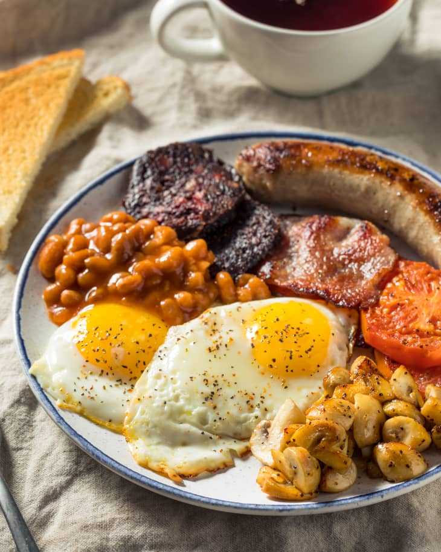

Full Irish

Hearty Full Irish
Full Irish breakfast is the best meal to enjoy on a weekend or when a long day is ahead of you. This cooked Irish fry-up is hearty and tastes amazing!
It is a filling meal, fried in a skillet/frying pan and served warm.
Ingredients
- Sausages, Rashers, fried eggs, baked beans, mushrooms, tomatoes, hash browns, black pudding
Steps
- Place the sausages, hash browns and black pudding slices onto a baking tray lined with baking parchment (for easy clean up) and bake them until ready. The time will vary depending on the ingredients you use so keep an eye on them. You might need to take out some of them earlier.
- About 10 minutes into baking, turn the sausages, hash browns and black pudding around for even cooking. Heat a little butter/oil in a large skillet/frying pan and fry bacon slices until cooked through. When ready, wrap them in a sheet of aluminum foil to keep them warm.
- In the same skillet/frying pan, fry the mushrooms and tomato (add more oil/butter, if needed). When ready, wrap them in the aluminum foil.
- Clean the skillet with paper kitchen towel and add little oil. When hot, crack the eggs in and fry on low/medium heat until they look to your liking. Using a lid will speed up the cooking process.
- Finally, heat up the beans (either in a microwave or in a skillet/frying pan).
- When ready, serve all the ingredients either on a baking tray, in a frying pan or plated individually.